K562 Repressive DNase matched - State 4:PromP (n=36)
K562 Repressive DNase matched - State 4:PromP (n=36)
[See group descriptions]
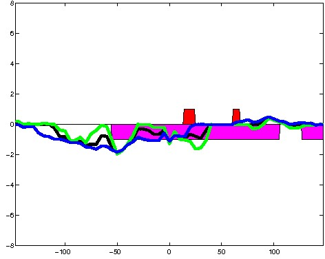
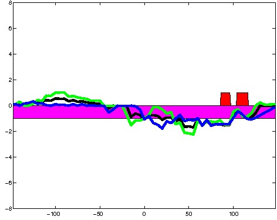
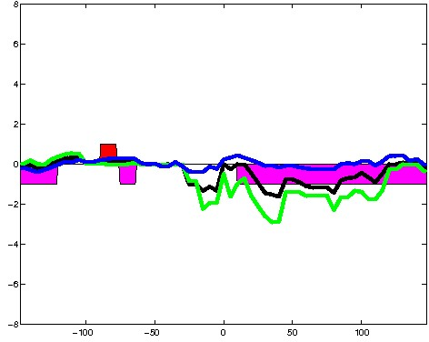
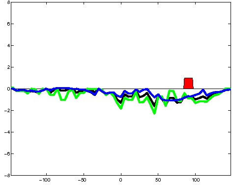
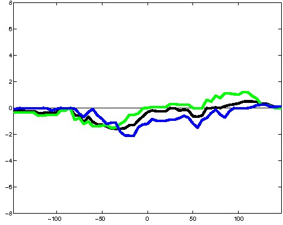
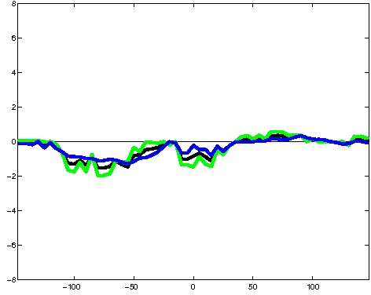
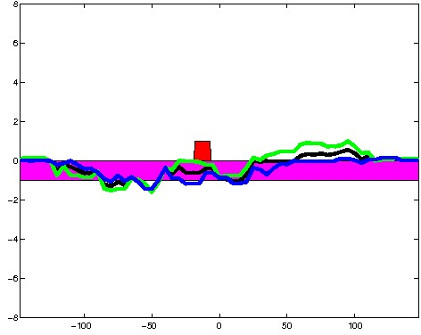
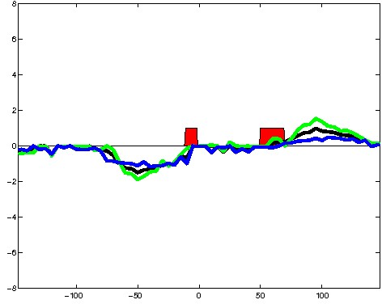
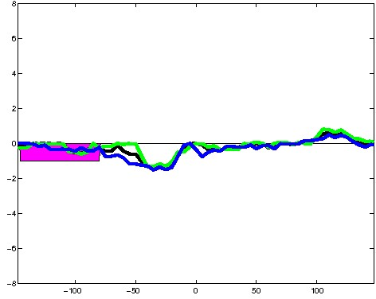
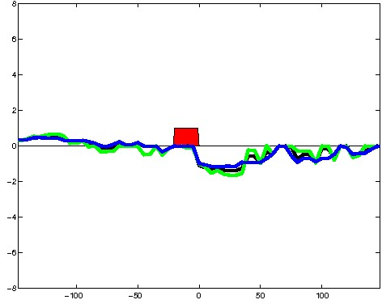
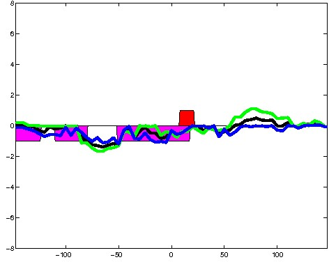
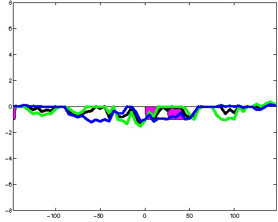
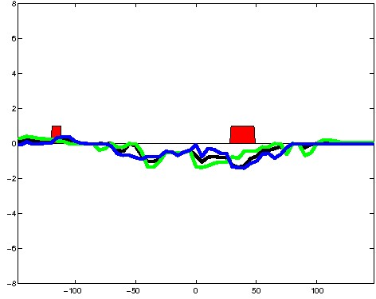
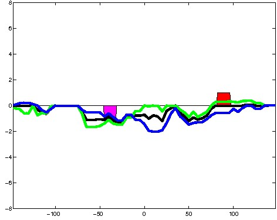
; picked in K562 (state 4:PromP, DNase); matched; chr2:242,295,389-242,295,683 (295bp)") 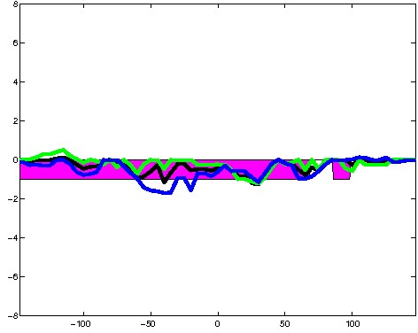
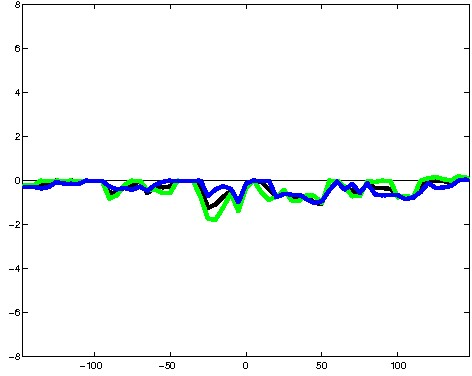
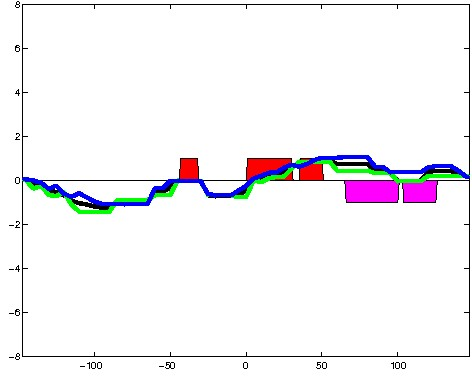
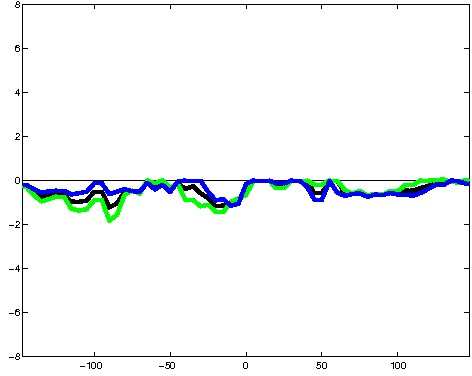
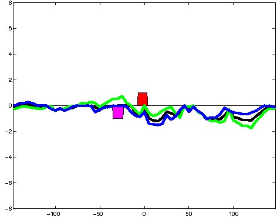
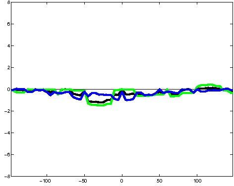
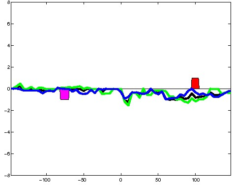
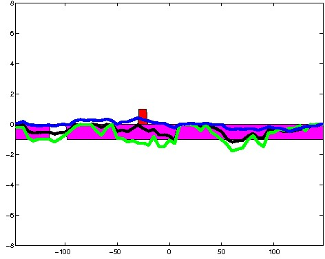
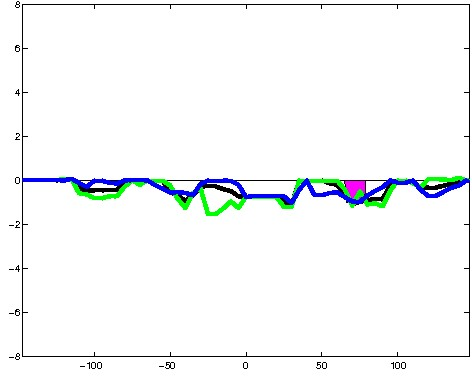
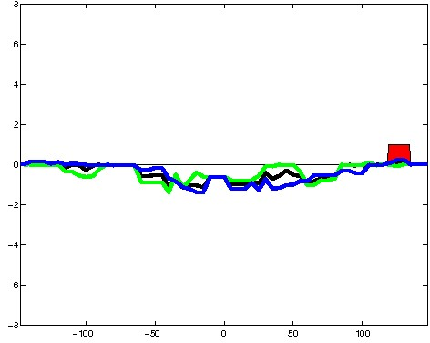
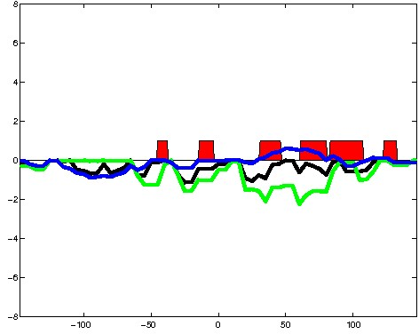
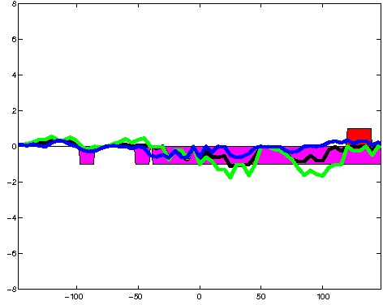
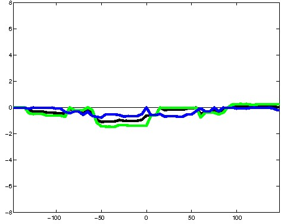
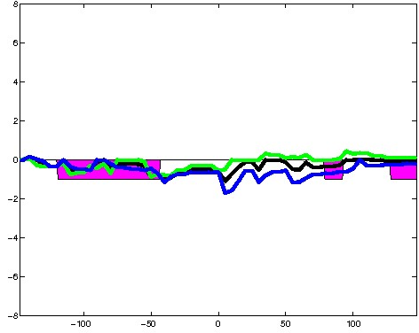
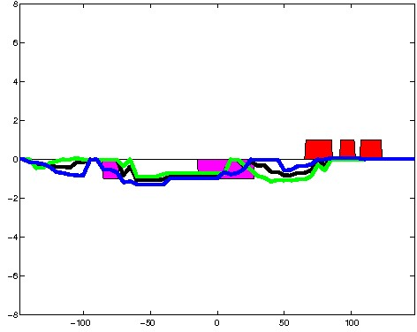
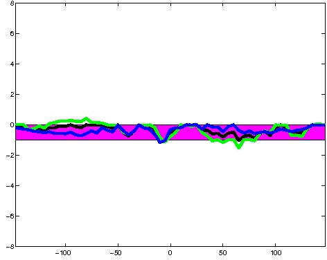
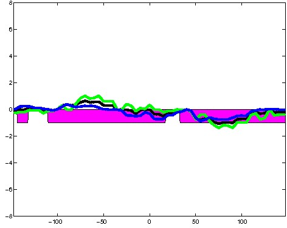
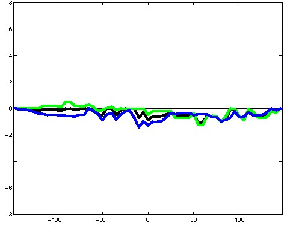
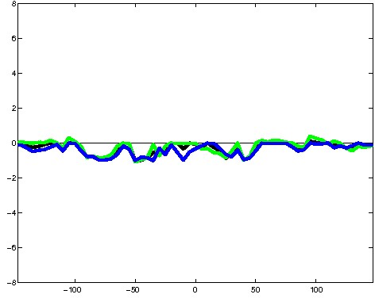
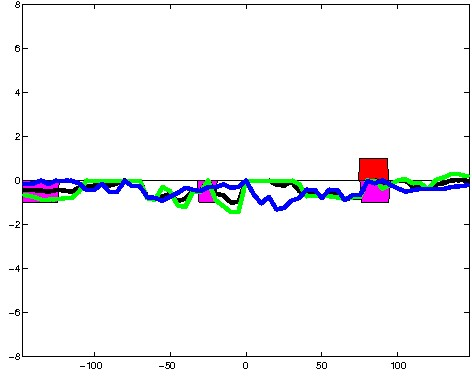
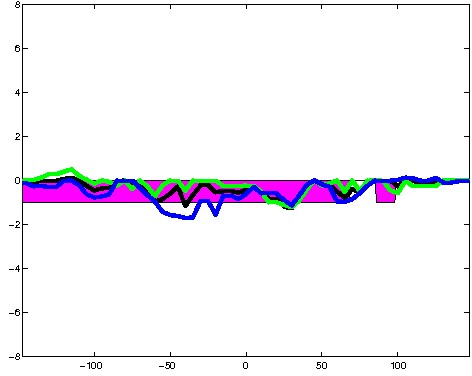
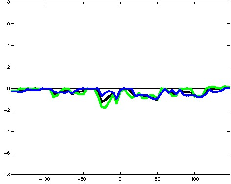
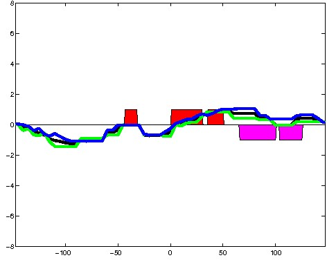
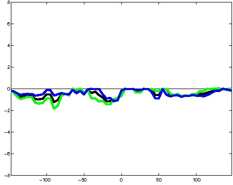
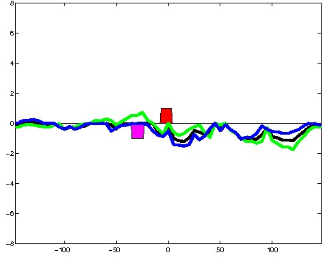
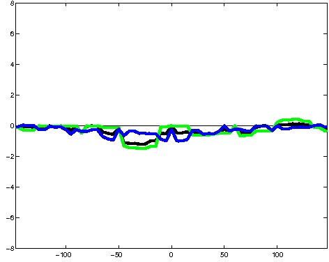
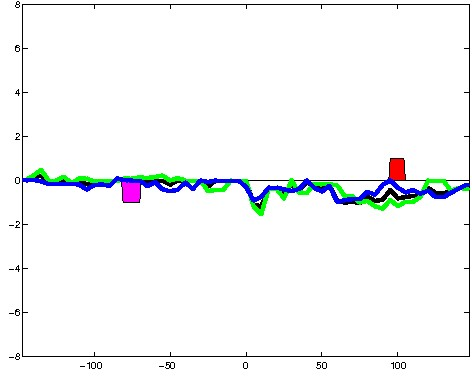
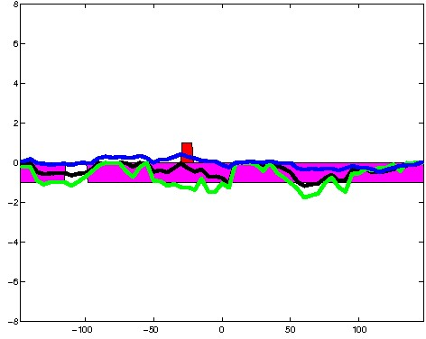
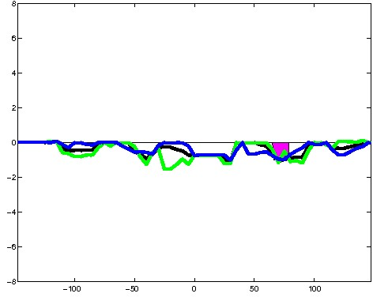
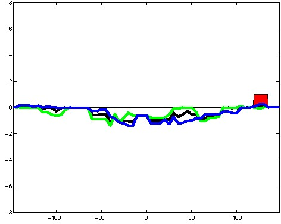
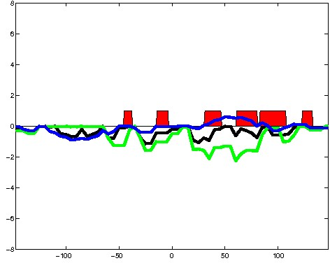
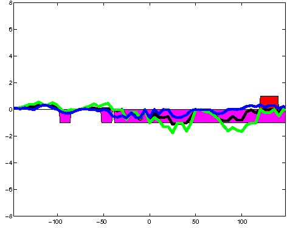
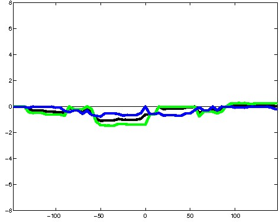
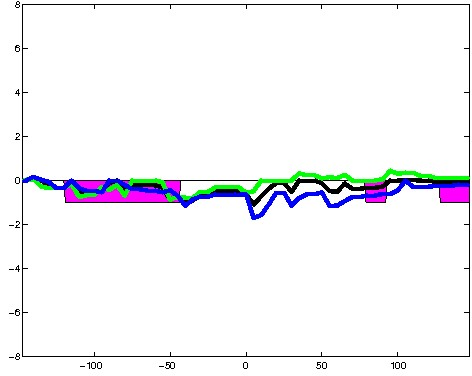
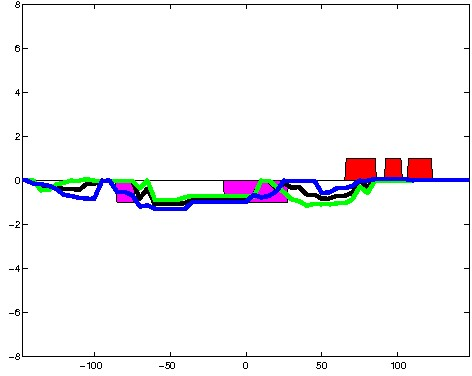
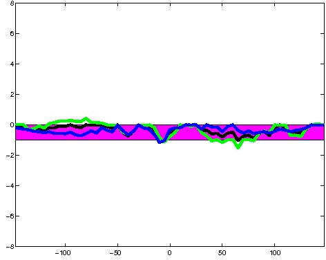
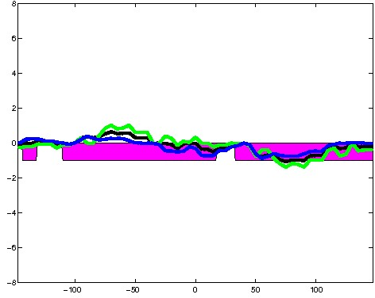
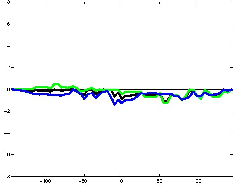
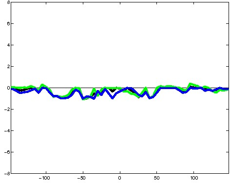
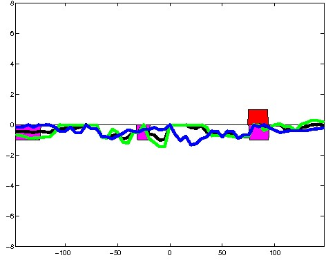
; picked in K562 (state 4:PromP, DNase); matched; chr15:98,971,589-98,971,883 (295bp)")